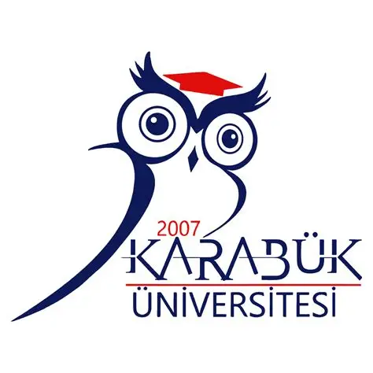
Yazılım Mühendisliği Anabilim Dalı
Yüksek Lisans Programı
Saniyede milyonlarca olayın (EPS) aktığı modern ağlarda, geleneksel SIEM'ler astronomik lisans maliyetleri ve donanım darboğazlarına yenik düşer. Geliştirdiğimiz bu açık kaynaklı devasa Big Data SIEM mimarisi, sınırları yıkarak bu sorunları kökten çözmektedir:
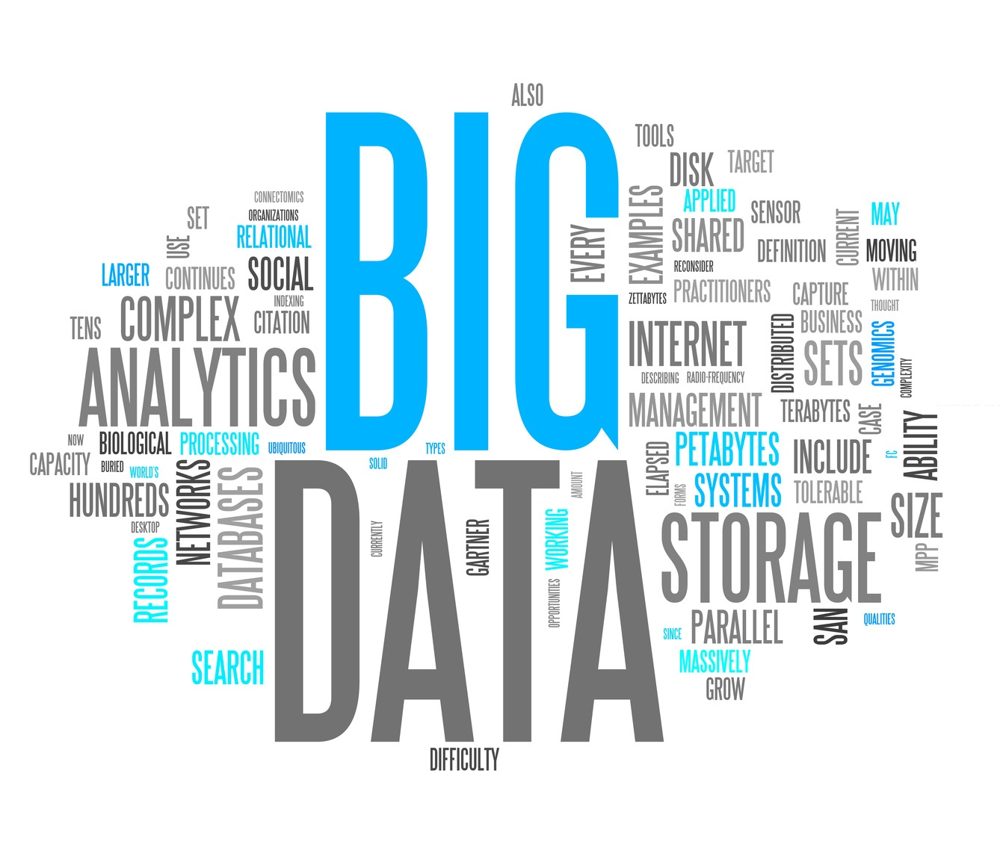
Sistemimizin ispatı için izole yapay veriler değil, siber güvenlik araştırmacılarının altın standardı olan SecRepo.com üzerindeki, sızma ve tarama saldırılarını organik barındıran devasa gerçek dünya ağ trafiği (Zeek/Snort) işlenmektedir:
conn.log (524MB) ile
http.log (54MB), dns.log, ssl.log, dhcp.log ve
sıradışı durumlar için weird.log oturum logları.
maccdc2012_fast_alert ve maccdc2012_full_alert logları sisteme dahil edilmiştir.
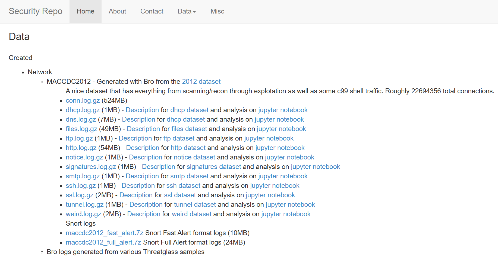
SecRepo Siber Güvenlik Veri Kümesi Deposu (conn.log)
Mimarinin veri giriş kapısı, karmaşık bir mühendislik yerine stabiliteye odaklanarak tasarlanan özel Kafka Producer mikroservisidir:
/data dizinine mount edilen
tüm Zeek loglarını (örn: conn.log, http.log, dns.log, ssl.log)
read-only olarak tarar ve akışa sokar.real_network_logs, web-logs, dns-logs, ssl-logs, ssh-logs).
Böylece statik veri seti canlı ağ trafiği gibi işlenir.Apache Kafka, devasa siber saldırılardaki veri fırtınalarını (EPS patlamalarını) emen, kayıpsız ileten ve analiz motorunun çökmesini engelleyen ultra hızlı sinir ağımızdır:
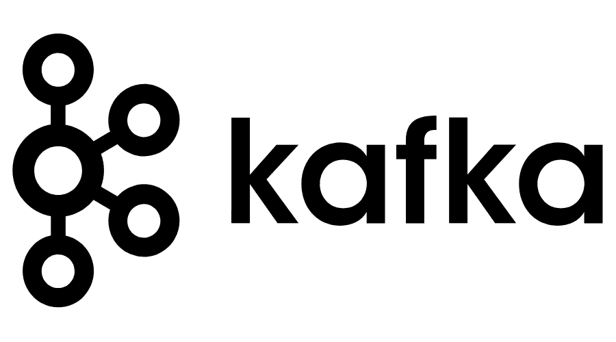
Dağıtık mimarimizin beyni olan Apache Spark; belleği (In-Memory) doğrudan kullanarak saniyeler altı reaksiyon süresiyle milyonlarca logu işler, temizler (ETL) ve makine öğrenmesi algoritmalarını paralel koşturur:
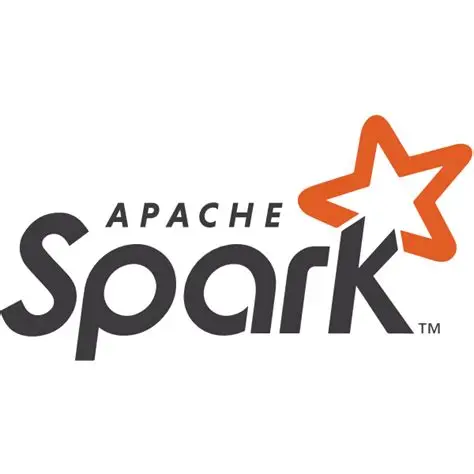
Petabaytlarca ağ logunu ve anomali geçmişini asla kaybetmemek adına, veriyi birden fazla sunucuya klonlayarak (replication) hata toleransını zirveye taşıyan HDFS (Hadoop) kullanılmıştır:
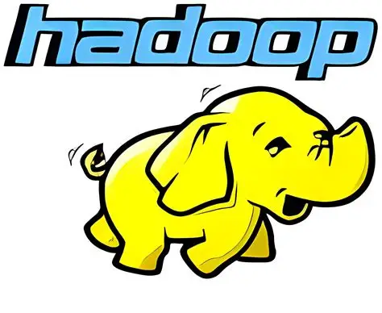
HDFS üzerinde yatan ham devasa dosyaları, milisaniyelik hızla sorgulanabilen SQL tablolarına dönüştüren zeka katmanımız Apache Hive'dır:
src_ip) okunmasını sağlar, disk I/O'yu azaltır.ingest_date
(yıl-ay-gün)
bazında klasörlenerek tarih aralığı sorgularının ışık hızında çalışması sağlanır.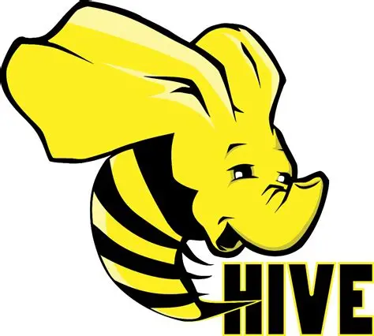
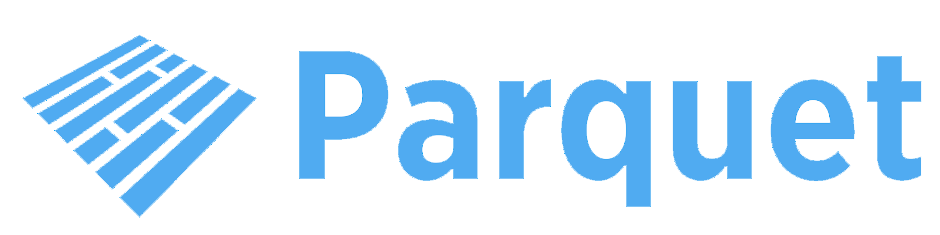
Güvenlik analistlerinin (SOC) milyarlarca satır arasında saniyeler içinde tehdit avcılığı (Threat Hunting) yapabilmesi için kurulan interaktif PySpark sorgu laboratuvarımızdır:
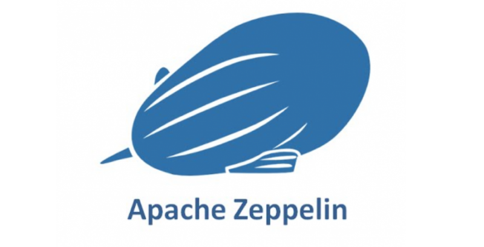
Karmaşık büyük veri operasyonlarının sonuçlarını, karar vericiler ve yöneticiler için saniyeler içinde anlaşılır görsel bir ziyafete dönüştüren, canlı komuta kontrol (SOC) raporlama merkezimizdir. Hive Server2 JDBC katmanı üzerinden doğrudan veri gölüne bağlanır:
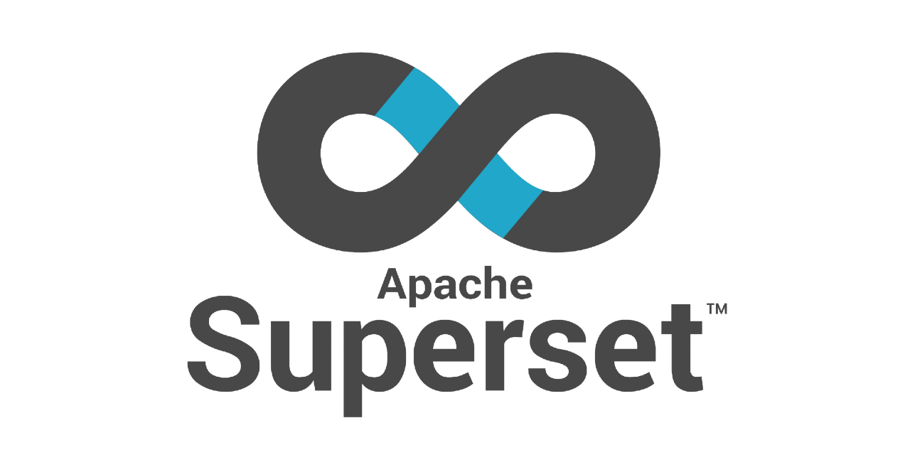
Bu devasa dağıtık orkestranın ışık hızında çalışması ve sunum grafiklerinin anında yüklenmesi için kritik altyapı ivmelendiricilerimiz:
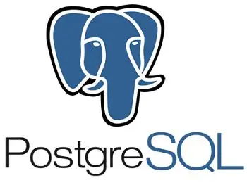
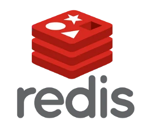
Modelin "Yalancı Alarmları (False Positive)" önlemesi için, veri setine sadece hacimsel istatistikler değil, Siber Güvenlik Bağlamı (Context) kazandırılmıştır:
is_dst_external): Hedef IP'nin RFC1918 özel blokta
(192.168.x.x vb.) olup olmadığını hesaplar.is_src_server): Kaynak IP'nin şirketteki kritik bir File
Server olup olmadığını belirler. Böylece yasal devasa sunucu trafiği ile dış dünyaya veri sızdıran (Data
Exfiltration) malware trafiği birbirinden kesin olarak ayrılır.Ağ akışındaki normal dışı sapmaları yakalamak amacıyla kurulan K-Means modelinin matematiksel şeması:
Akan canlı trafikte siber davranışlar zamanla değişir (Concept Drift). Bu zorluğu yenmek için kurguladığımız asenkron eğitim mimarisi:
COLD_START_ROWS = 100 satır limitidir).RETRAIN_EVERY_BATCHES = 50) en güncel log verilerini alarak K-Means modelini asenkron olarak
yeniden eğitir.Eğitilen K-Means modelinin canlı trafikteki normal akışlar ile siber anomali (outlier) akışları nasıl kümelediğinin 2D izdüşümü:
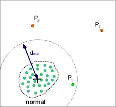
Modelin doğruluğunu jüri önünde ispatlayan anomali kararları ve başarım metrikleri:
siem.model_metrics tablosuna yazılır ve modelin kararlılığı izlenir.
Deterministik kurallar, imza tabanlı saldırı paternlerini ve bilinen siber tehditleri saniyeler içinde yakalamak üzere tasarlanmıştır:
../, etc/passwd, win.ini ve /bin/sh gibi
dizin geçiş paternlerinin yakalanması.